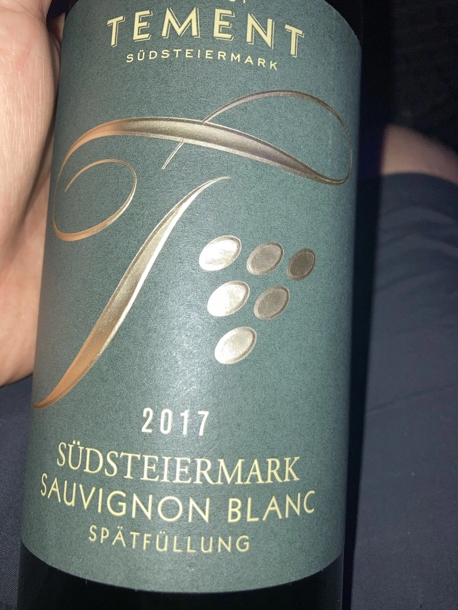

- Type
- White Sparkling, Brut
- Producer
- Pierre Frick
- Vintage
- 2017
- Location
- France, Crémant d’Alsace AOC
- Grapes
- Pinot Blanc, Pinot Gris
- Alcohol
- 13
- Sugar
- 1
- Price
- 720 UAH, 754 UAH
- Cellar
- 1 bottle
This blend of Pinot Blanc and Pinot Gris spend 12 months sur lie. No added sulphites.
Ratings
2021-08-13 - 8.00
It is hard to stay objective when it comes to iconic producers, especially when you don’t like them haha. I had several disappointing experiences with Frick wines, but somehow decided to give his sparkling a try. And I am happy because it turned out to be an expressive, deep and sophisticated Cremant with honey, grass, dough, almond, dried yellow fruits and subtle hints of pickles. Well balanced, tasty and interesting. Sky rocket QPR.
Related


